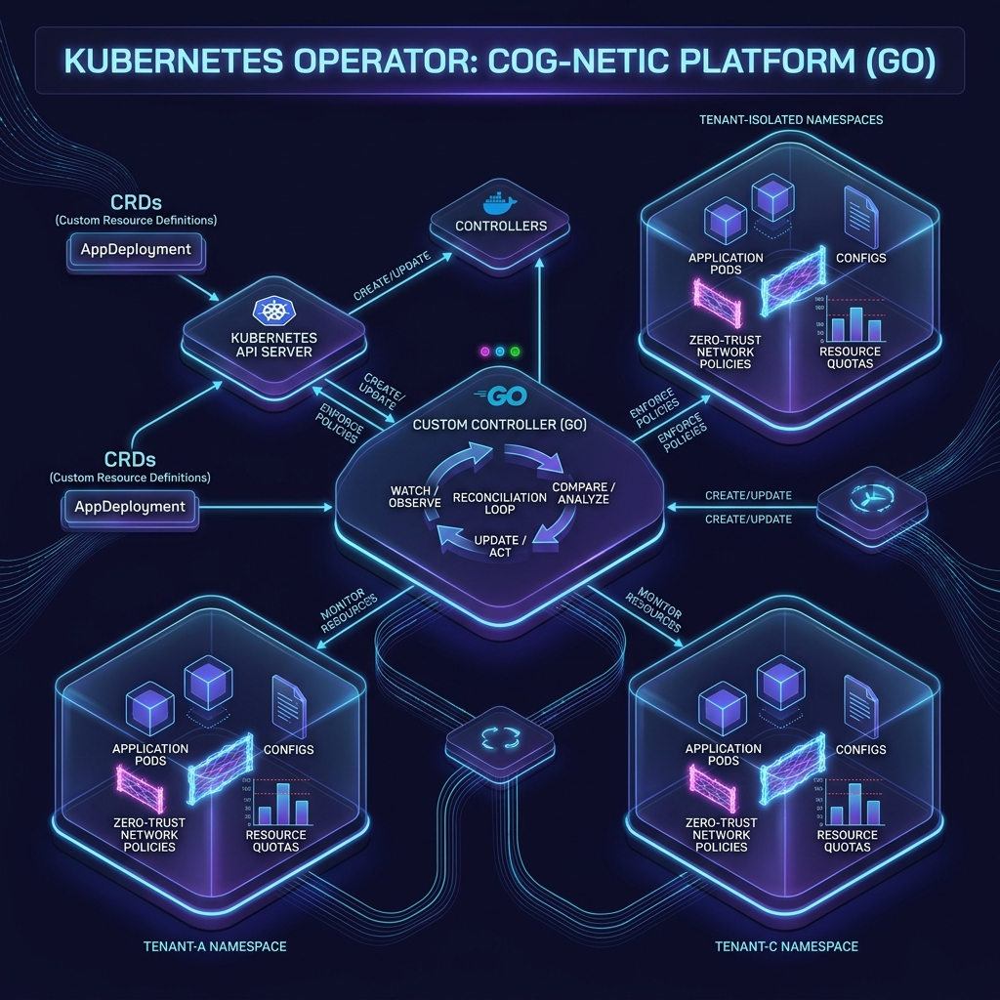

Custom Go Kubernetes Operator
Cloud-Native Multi-Tenant SaaS Infrastructure & Automation Platform

Overview
This project is an enterprise-grade Custom Kubernetes Operator written in Go (Golang) using controller-runtime and kubebuilder. The operator automates the complete multi-tenant SaaS lifecycle on Kubernetes—provisioning isolated namespaces, enforcing tier-based resource quotas, applying zero-trust network policies, and managing tenant workload deployments with dynamic TLS routing.
Architecture & Core Features
1. Custom Resource Definition (`Tenant`)
Defined custom API specifications (saas.infra.io/v1alpha1) allowing SaaS admins to configure tenant attributes such as tier specifications (basic, pro, enterprise), domain routing, contact metadata, and replica counts.
2. Level-Triggered Idempotent Reconciliation
Engineered a robust event-driven controller reconciliation loop (TenantReconciler) that constantly ensures cluster state aligns with the desired custom resource specification. Handles state drifts automatically without duplicate operations.
3. Multi-Tenancy Security Hardening
Enforces strict isolation across tenants:
- Namespace Isolation: Dynamically provisions dedicated
tenant-<name>namespaces. - Zero-Trust NetworkPolicies: Blocks cross-tenant intra-cluster communication while allowing ingress only from authorized NGINX controllers.
- Tier-Based ResourceQuotas: Caps CPU, Memory, and Pod allocations based on tenant tier.
- LimitRanges: Enforces default container memory/CPU requests to prevent noisy-neighbor attacks.
4. Graceful Cleanup & Finalizers
Implemented Kubernetes finalizers (saas.infra.io/tenant-finalizer) to guarantee orderly teardown and zero resource leakage when tenant custom resources are deleted.
Technical Highlights
Built using idiomatic, thread-safe Go code following cloud-native best practices. Features OpenAPI v3 schema validation, metav1.Condition observability metrics, RBAC manifest generators, and automated local deployment via Kind/Minikube.